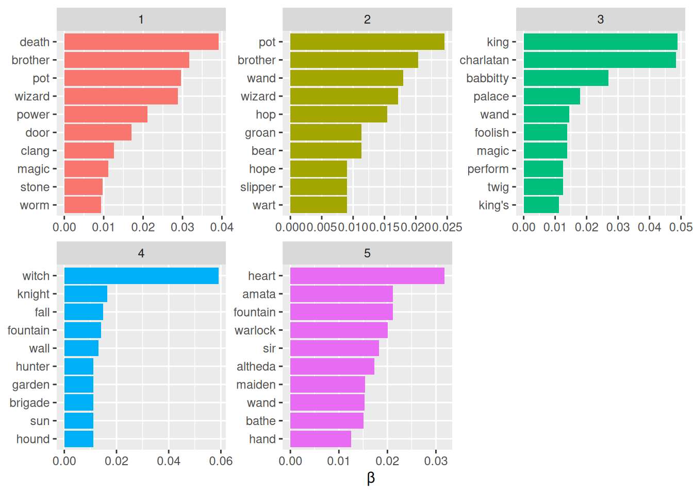
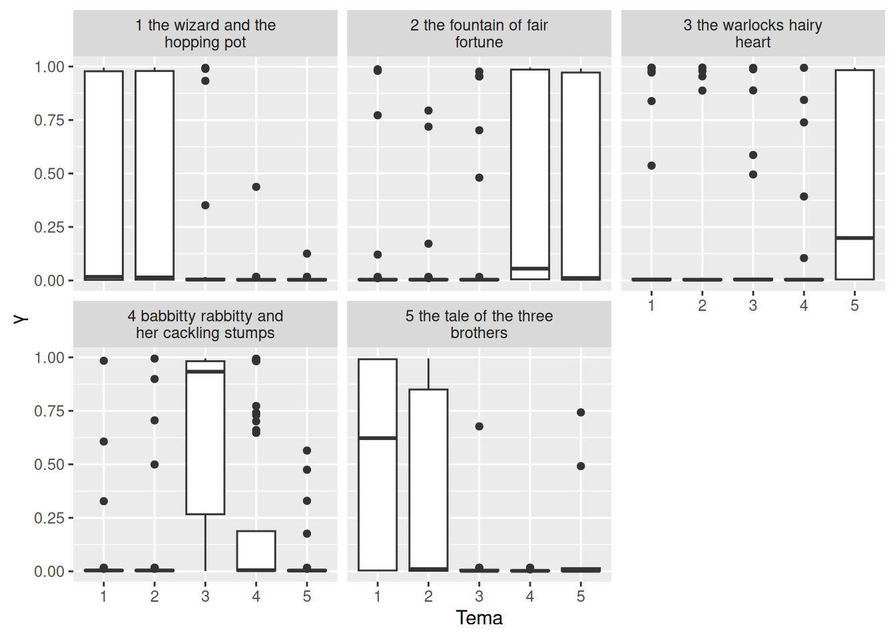

Kad čitamo zbirku tekstova, gotovo nesvjesno prepoznajemo o kojim temama govore i koji tekstovi pripadaju zajedno. Tematsko modeliranje pokušava to isto učiniti računalno, bez unaprijed zadanih kategorija na način da iz samih riječi i njihova zajedničkog pojavljivanja otkriva skupine riječi koje tvore teme te pokazuje u kojoj se mjeri svaka tema pojavljuje u pojedinom tekstu. Rezultat nije gotov odgovor, nego prijedlog koji istraživač mora protumačiti i provjeriti jer model ne zna što teme znače, nego samo koje se riječi pojavljuju zajedno.
U analizi teksta često radimo sa zbirkama dokumenata koje želimo razvrstati u prirodne skupine kako bismo ih lakše razumjeli. Tematsko modeliranje (engl. topic modeling) metoda je nenadziranog razvrstavanja dokumenata koja pronalazi skupine riječi koje se pojavljuju zajedno, odnosno teme, iako unaprijed ne znamo koje su to teme. Najpoznatija metoda tematskog modeliranja je latentna Dirichletova alokacija (engl. latent Dirichlet allocation, LDA). Ona svaki dokument promatra kao mješavinu tema, a svaku temu kao mješavinu riječi. Zato se dokumenti mogu sadržajno preklapati, umjesto da budu razvrstani u strogo odvojene skupine.
LDA se temelji na dva načela:
Svaki je dokument mješavina tema, odnosno može sadržavati riječi iz više tema u različitim omjerima. Primjerice, u modelu s dvije teme mogli bismo reći da je dokument 1 90 % tema A i 10 % tema B, a dokument 2 30 % tema A i 70 % tema B.
Svaka je tema mješavina riječi pa, primjerice, u modelu vijesti s dvije teme, jednom o politici i jednom o zabavi, najčešće riječi u temi o politici mogle bi biti predsjednik, sabor i vlada, a u temi o zabavi film, televizija i glumac. Ista riječ može pripadati i jednoj i drugoj temi.
LDA istodobno procjenjuje oboje, koje riječi čine svaku temu i koje teme čine svaki dokument.
U primjeru korištenom u ovom tekstu je samo pet bajki, a što je premalo dokumenata da bi model mogao pronaći teme. Zato ćemo za dokument uzeti odlomak pa ćemo imati oko 180 dokumenata. To nam omogućuje i zanimljivu provjeru prema kojem, ako model zadamo s pet tema, možemo vidjeti hoće li teme odgovarati bajkama, odnosno hoće li model samo na temelju riječi prepoznati iz koje bajke dolazi koji odlomak.
Funkcija LDA() iz paketa topicmodels kao ulaz ne prima uredan podatkovni okvir, nego matricu dokumenata i pojmova (engl. document-term matrix, DTM). U njoj su dokumenti u recima, pojmovi u stupcima, a vrijednosti su broj pojavljivanja pojma u dokumentu. Matricu stvaramo u tri koraka:
Funkcijom unite() stvaramo stupac document, jedinstvenu oznaku odlomka koja spaja naziv bajke i redni broj odlomka, odvojene znakom |. Argument remove = FALSE čuva izvorne stupce.
Funkcijom count() brojimo koliko se puta svaka lema pojavljuje u svakom odlomku.
Funkcijom cast_dtm() iz paketa tidytext uredan podatkovni okvir pretvaramo u matricu dokumenata i pojmova. Zadajemo joj stupac s dokumentima, stupac s pojmovima i stupac s brojem pojavljivanja.
# Matrica dokumenata (odlomaka) i pojmova (lema)tToBtB_dtm <- tToBtB_word_tokens_stop_words_lemmatize |>unite(document, fairy_tale, paragraph_no, sep ="|", remove =FALSE) |>count(document, lemma) |>cast_dtm(document = document, term = lemma, value = n)# PregledtToBtB_dtm
<<DocumentTermMatrix (documents: 175, terms: 1076)>>
Non-/sparse entries: 2250/186050
Sparsity : 99%
Maximal term length: 13
Weighting : term frequency (tf)
Matrica ima 175 dokumenata (odlomaka) i 1076 pojmova (lema), što je jednako broju različitih lema koji smo dobili u poglavlju o deskriptivnoj analizi. Od ukupno 188300 ćelija matrice (175 × 1076) samo 2250 sadrži vrijednost veću od nule (Non-/sparse entries) pa je rijetkost matrice 99 %. Drugim riječima, prosječan odlomak sadrži tek trinaestak različitih lema od njih više od tisuću. Takva je rijetkost uobičajena za tekstne podatke jer se svaki dokument sastoji od tek malog dijela ukupnog rječnika, no kod nas je izraženija zbog kratkoće odlomaka. Za model to znači da o svakom dokumentu ima malo podataka, a što treba imati na umu pri tumačenju rezultata.
Model procjenjujemo funkcijom LDA(). Njezini su najvažniji argumenti:
x - matrica dokumenata i pojmova;
k - broj tema koje model treba pronaći;
method - metoda procjene: zadana je "VEM", a druga mogućnost je "Gibbs" (Gibbsovo uzorkovanje);
control - popis dodatnih postavki, primjerice seed za ponovljivost rezultata ili, kod metode "Gibbs", iter za broj iteracija.
Broj tema k mora se zadati unaprijed. Postoje statistički postupci za njegov odabir, no često je najvažnije je li dobiveni model smislen i protumačiv. U našem slučaju zadajemo pet tema, koliko ima i bajki.
Procjena modela uključuje slučajnost, pa bi model pri svakom pokretanju mogao dati nešto drugačije rezultate. Zato argumentom control = list(seed = 1234) postavljamo sjeme (engl. seed) generatora slučajnih brojeva kako bismo pri svakom pokretanju dobili iste rezultate.
# LDA model s pet tematToBtB_lda <-LDA( tToBtB_dtm,k =5,control =list(seed =1234))# PregledtToBtB_lda
A LDA_VEM topic model with 5 topics.
Ispis pokazuje samo da je procijenjen model s pet tema metodom VEM. Sam model sadrži mnogo informacija, a za njihovo izdvajanje koristimo funkciju tidy() iz paketa tidytext koja ih pretvara u uredan oblik. Ostatak analize uključuje istraživanje i tumačenje modela.
17.1 Vjerojatnosti riječi po temama
Vjerojatnost da se pojedina riječ pojavi u pojedinoj temi označava se slovom beta \(\beta\). Izdvajamo je funkcijom tidy() s argumentom matrix = "beta".
# Vjerojatnosti riječi po temamatToBtB_topics <-tidy(tToBtB_lda, matrix ="beta")# PregledtToBtB_topics
Rezultat ima oblik jedna tema po pojmu po retku, odnosno, za svaku kombinaciju teme i riječi navedena je vjerojatnost da se ta lema pojavi u toj temi. Tablica zato ima 5380 redaka, koliko je i kombinacija pet tema i 1076 lema (5 × 1 076). Vrijednosti su zapisane u znanstvenom zapisu u kojem e-3 znači „pomnoženo s 10 na minus treću”. Tako 2.44e-3 iznosi 0,00244, a 1.96e-190 broj je s 189 nula iza decimalnog zareza, odnosno praktički nula.
Primjerice, riječ antidote u temi 1 ima vjerojatnost 0,00244, a u ostalim temama vjerojatnost joj je praktički nula pa pripada samo temi 1. Rijek benefit ima vjerojatnost 0,00244 u temi 1 i 0,00187 u temi 4, a u ostalim temama praktički nula. Ona je, dakle, podijeljena između dvije teme. To je upravo ono po čemu se tematsko modeliranje razlikuje od strogog razvrstavanja jer ista riječ može pripadati više tema s različitom vjerojatnošću.
Teme je najlakše razumjeti prema njihovim najvjerojatnijim riječima. Funkcijom slice_max() za svaku temu izdvajamo deset lema s najvećom vrijednošću beta i prikazujemo ih grafički.
# Deset najvjerojatnijih lema u svakoj temitToBtB_top_terms <- tToBtB_topics |>group_by(topic) |>slice_max( beta, n =10,with_ties =FALSE ) |>ungroup() |>arrange(topic, -beta)# Grafički prikaztToBtB_top_terms |>mutate(term =reorder_within(term, beta, topic)) |>ggplot(aes(x = beta, y = term, fill =factor(topic))) +geom_col(show.legend =FALSE) +facet_wrap(~topic, scales ="free") +scale_y_reordered() +labs(x ="β", y =NULL)

Ova vizualizacija omogućuje razumijevanje tema koje su izdvojene iz bajki.
Tema 3 jedina jasno odgovara jednoj bajci. Njezine najvjerojatnije riječi, king, charlatan, babbitty, palace, foolish, magic i perform, gotovo su sve iz bajke Babbitty Rabbitty and Her Cackling Stumps pa je model tu bajku prepoznao kao zasebnu temu.
Ostale su teme mješavine riječi iz više bajki. Teme 1 i 2 spajaju bajke The Wizard and the Hopping Pot i The Tale of the Three Brothers s obzirom da se u obje nalaze pot i wizard iz prve bajke te brother iz druge, a tema 1 sadrži još i death i stone, dok tema 2 sadrži hop, groan, slipper i wart. Tema 4 većinom opisuje bajku The Fountain of Fair Fortune (knight, fountain, wall, garden, sun), ali u njoj se nalaze i riječi koje smo u poglavlju o odnosima među riječima vidjeli kao skupinu vezanu uz lov na vještice (witch, hunter, brigade, hound). Tema 5 spaja bajku The Warlock’s Hairy Heart (heart, warlock, maiden) s imenima iz bajke The Fountain of Fair Fortune (amata, altheda, sir, bathe).
Model, dakle, nije pet tema u potpunosti poistovjetio s pet bajki. Djelomično je to posljedica kratkoće bajki i odlomaka, a djelomično toga što bajke dijele dio rječnika, primjerice riječi wand, magic i wizard koje pojavljuju se u više tema. Bajka The Tale of the Three Brothers, najkraća od pet bajki, nije dobila vlastitu temu, nego su njezine riječi raspoređene u teme 1 i 2.
Neke se riječi pojavljuju u više tema. To je prednost tematskog modeliranja pred metodama koje dokumente strogo razvrstavaju u jednu skupinu jer se i u prirodnom jeziku iste riječi koriste u različitim temama.
17.2 Vjerojatnosti tema po dokumentima
Osim što svaku temu procjenjuje kao mješavinu riječi, LDA svaki dokument procjenjuje kao mješavinu tema. Udio pojedine teme u pojedinom dokumentu označava se slovom gama (\(\gamma\)), a izdvajamo ga funkcijom tidy() s argumentom matrix = "gamma". Funkcijom separate() oznaku dokumenta ponovno dijelimo na naziv bajke i redni broj odlomka. Znak | u regularnim izrazima ima posebno značenje pa ga u argumentu sep pišemo kao "\\|".
# Udjeli tema po odlomcimatToBtB_documents <-tidy( tToBtB_lda,matrix ="gamma") |>separate( document,c("fairy_tale", "paragraph_no"),sep ="\\|",convert =TRUE )# PregledtToBtB_documents
Vrijednosti game kreću se od 0 do 1 i za svaki se dokument zbrajaju na 1. Vrijednost blizu 1 znači da se odlomak gotovo u potpunosti sastoji od riječi iz te teme, a vrijednost blizu 0 da te teme u odlomku gotovo nema.
Ako teme odgovaraju bajkama, odlomci svake bajke trebali bi imati visok gama za jednu temu, a nizak za ostale. To možemo provjeriti kutijastim dijagramom koji za svaku bajku prikazuje raspodjelu gama po temama.
# Raspodjela udjela tema po bajkamatToBtB_documents |>mutate(fairy_tale =str_wrap(str_replace_all(fairy_tale, "_", " "), 25)) |>ggplot(aes(x =factor(topic), y = gamma)) +geom_boxplot() +facet_wrap(~fairy_tale) +labs(x ="Tema", y ="γ")

Vrijednosti game uglavnom su ili vrlo blizu 0 ili vrlo blizu 1. To znači da model gotovo svaki odlomak pripisuje uglavnom jednoj temi, a ne mješavini više tema što je očekivano kod tako kratkih dokumenata. Zato kutije na dijagramu izgledaju neobično. Kutija koja se proteže od 0 do 1, s medijanom blizu 0, znači da je ta tema prevladavajuća u manjem dijelu odlomaka bajke (između četvrtine i polovine), dok je u ostalima gotovo nema.
Dijagram potvrđuje ono što smo vidjeli na najvjerojatnijim riječima tema. Bajka Babbitty Rabbitty and Her Cackling Stumps najjasnije je povezana s jednom temom jer medijan game za temu 3 iznosi oko 0,93 pa je u većini njezinih odlomaka upravo ta tema prevladavajuća. Bajka The Warlock’s Hairy Heart povezana je ponajprije s temom 5, ali nešto slabije (medijan oko 0,2) pa je ta tema prevladavajuća u manjem dijelu njezinih odlomaka. Ostale su bajke podijeljene između dvije teme. Odlomci bajki The Wizard and the Hopping Pot i The Tale of the Three Brothers raspoređeni su između tema 1 i 2, a pri čemu je kod bajke The Tale of the Three Brothers tema 1 nešto izraženija (medijan oko 0,6). Odlomci bajke The Fountain of Fair Fortune raspoređeni su između tema 4 i 5.
Model je, dakle, dvije bajke, The Wizard and the Hopping Pot i The Tale of the Three Brothers, spojio u isti par tema, a bajke The Fountain of Fair Fortune i The Warlock’s Hairy Heart dijele temu 5. Točke izvan kutija pokazuju pojedinačne odlomke koje je model pripisao temi neuobičajenoj za njihovu bajku.
17.2.1 Koliko dobro teme odgovaraju bajkama
Na kraju možemo provjeriti koliko je odlomaka model „ispravno” razvrstao. Postupak je sljedeći:
Za svaki odlomak funkcijom slice_max() izdvajamo temu s najvećom gamom, odnosno temu koja u njemu prevladava.
Za svaku bajku pronalazimo temu koja prevladava u najviše njezinih odlomaka i proglašavamo je temom te bajke (consensus).
Za svaki odlomak provjeravamo podudara li se njegova tema s temom njegove bajke.
# Tema koja prevladava u svakom odlomkutToBtB_classifications <- tToBtB_documents |>group_by(fairy_tale, paragraph_no) |>slice_max(gamma, n =1, with_ties =FALSE) |>ungroup()# Tema koja prevladava u svakoj bajcitToBtB_consensus <- tToBtB_classifications |>count(fairy_tale, topic) |>group_by(fairy_tale) |>slice_max(n, n =1, with_ties =FALSE) |>ungroup() |>select(fairy_tale, consensus = topic)# Udio odlomaka čija tema odgovara temi bajketToBtB_classifications |>inner_join(tToBtB_consensus, by ="fairy_tale") |>group_by(fairy_tale, consensus) |>summarise(paragraphs =n(),correct =sum(topic == consensus),share = correct / paragraphs,.groups ="drop" )
Svaka je bajka dobila drugu temu kao prevladavajuću, The Wizard and the Hopping Pot temu 2, The Fountain of Fair Fortune temu 4, The Warlock’s Hairy Heart temu 5, Babbitty Rabbitty and Her Cackling Stumps temu 3, a The Tale of the Three Brothers temu 1. U tom smislu model je pet tema doista povezao s pet bajki. Udio odlomaka koji pripadaju temi svoje bajke, međutim, nije velik. Najveći je kod bajke Babbitty Rabbitty and Her Cackling Stumps u kojoj je temi 3 pripisano 33 od 53 odlomka (62 %), a najmanji kod bajke The Fountain of Fair Fortune u kojoj je temi 4 pripisano 20 od 48 odlomaka (42 %). Kod ostalih bajki udio je između 44 i 50 %.
Ukupno je model temi svoje bajke pripisao 87 od 175 odlomaka, odnosno nešto manje od polovine (50 %). To je znatno bolje od slučajnog razvrstavanja, kod kojeg bi uz pet tema svaki odlomak imao 20 % vjerojatnosti da dobije temu svoje bajke, ali je daleko od savršenog. Pritom treba imati na umu da je „ispravna” tema svake bajke određena upravo prema tome koja tema u njoj prevladava pa ovakav izračun rezultat donekle uljepšava.
Ovaj rezultat zaokružuje ono što smo vidjeli u ovom poglavlju. Model je samo na temelju riječi bez ikakvih podataka o tome iz koje je bajke koji odlomak uspio djelomično prepoznati bajke, i to najbolje onu s najizrazitijim rječnikom, Babbitty Rabbitty and Her Cackling Stumps. No bajke dijele dio rječnika, a odlomci su kratki pa se teme u velikoj mjeri preklapaju. Upravo zato rezultate tematskog modeliranja treba tumačiti kao prijedlog, a ne kao konačan odgovor.
Funkcija LDA() iz paketa topicmodels samo je jedna od implementacija latentne Dirichletove alokacije. Paket mallet omogućuje korištenje programa MALLET, napisanog u programskom jeziku Java, a paket tidytext i za njegove rezultate nudi funkcije tidy(). Paket mallet drugačije pristupa ulaznim podacima te kao ulaz uzima netokenizirane dokumente, sam ih tokenizira i zahtijeva zasebnu datoteku sa zaustavnim riječima. Zato prije procjene modela tekst svakog dokumenta treba spojiti u jedan niz. Za tematsko modeliranje u R-u često se koristi i paket stm (engl. structural topic model) koji omogućuje da se u model uključe i podaci o dokumentima, poput autora ili vremena nastanka.